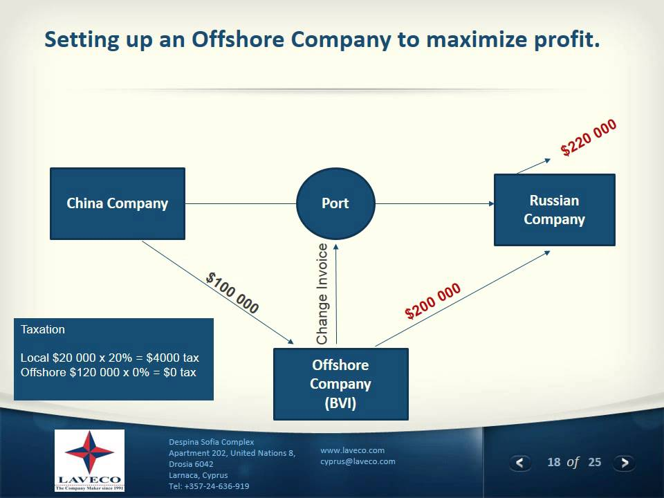

An Offshore Company refers a corporation, LLC or similar class of entity formed in a foreign country to that of the principals of the organization or one that can only operate outside of its country of formation.This article provides information to help one understand the definition of the term “Offshore Company”and to describe how they differ from domestic companies.
First of all, we will define the term Offshore Offshore means located or situated beyond one’s national boundaries.The term Offshore Company has two definitions depending on its perspective. From the standpoint of theprincipals of the company, it is a company that has been filed outside of the country where its principals(officers, directors, shareholders, members, partners) reside. From within its country of formation, it is a companythat has been formed for the purpose of operating outside of the jurisdiction where it was originally filed.
Characteristics of offshore companies
Although all offshore companies differ to a degree depending upon the corporate law in the relevant all offshore companies tend to enjoy certain core characteristics:
They are broadly not subject to taxation in their home jurisdiction.
The corporate regime will be designed to promote business flexibility.
Regulation of corporate activities will normally be lighter than in a developed country
The absence of taxation or regulation in the home jurisdiction does not, of course, exempt the relevantcompany from taxation or regulation abroad. For example, Michael Kors Holdings Limited is incorporatedin the British Virgin Islands, but is listed on the New York Stock Exchange, where it is subject both theU.S. taxation and to financial regulation by the U.S. Securities and Exchange Commission.
Anothercommon characteristic of offshore companies is the limited amount of information available tothe public. This varies from jurisdiction to jurisdiction. At one end of the scale, in the Cayman Islandsand Delaware, there is virtually no publicly available information. But at the other end of the scale,in Hong Kong companies file annual returns with particulars of directors, shareholders and annual accounts.However, even in jurisdictions where there is relatively little information
